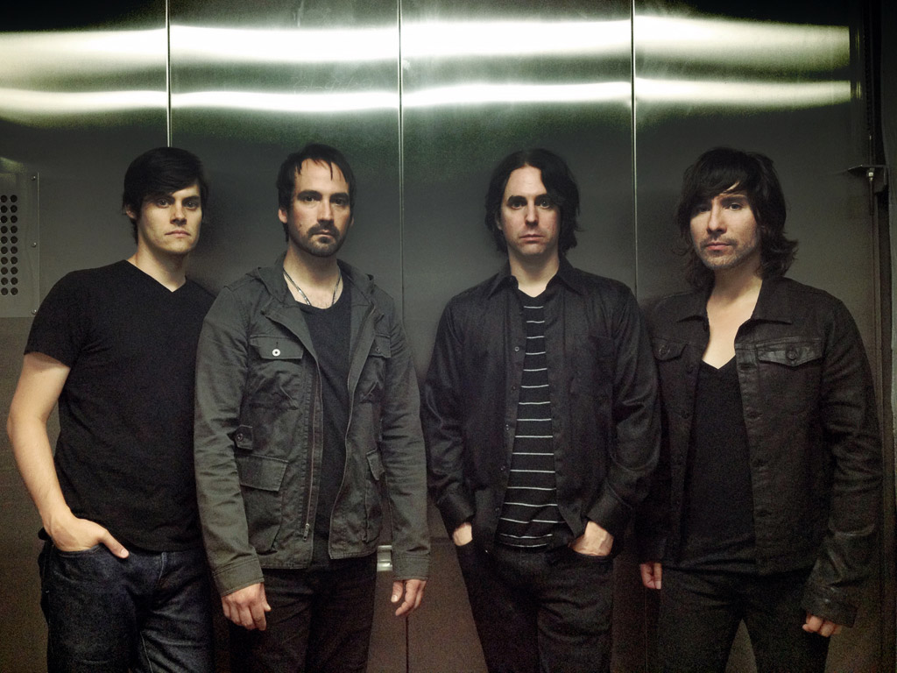

SUBWAY LIGHTS are:
Gary Call - vocalist/guitarist/programmer
Alex Quinn - guitarist/programmer
Jairo Ruiz - bassist
Art Quanstrom - drummer
SUBWAY LIGHTS are a Nashville based rock band formed in 2012. The band's founding members, Gary Call and Alex Quinn, started writing songs for the new band in early 2012, during which time both members played around town with other local bands. Jairo Ruiz, formerly with The Worsties, was recruited later in the year with Art Quanstrom joining soon after.
SUBWAY LIGHTS' sound draws influence from such creative artists like David Bowie, The Cure, The Bravery, The Strokes, Franz Ferdinand, and INXS. The music is distinct, blending melodic guitar riffs against synth-pop textures, with bass and drums driving the rhythm. The vocals are resounding and melodious, completing the compelling sound of the band.
The band is set to release a new, self-titled EP with 4 tracks in 2013. The band will be booking shows soon. If you are interested in booking the band, please contact us at booking@subwaylights.com